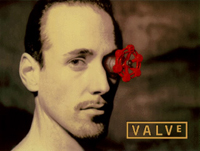

About Me

- dirtysalt1987 AT gmail DOT com, CV (中文),
Cover Letter - LinkedIn, 微博, Twitter, GitHub, 简书
- Umeng Analytical Architecture
- 如何在一天之内收集3.6亿移动设备的数据
- Open your mind, and open your eys. (放眼未来, 自由想象)
这个站点最开始是放在同事 xuchaoqian 免费提供给我的空间下的. 当时还没有dirlt.com这个域名, 使用的是他给的域名下面~/dirlt目录. 之后申请了dirlt.com这个域名, 也开始考虑自己申请主机空间的事情. 因为翻墙的需要购买了linode主机, 所以顺便把这个站点放在上面, 不过访问速度非常慢, 而且站点内容还是太少, 所以就搁置着. 再后来github开始提供pages服务, 因为这个站点是完全的静态页, 所以迁移过去没有花太大力气. 考虑到github pages有CDN支持, 因此访问效果非常好. 但是近期又发现github把baidu爬虫给屏蔽了, 导致从百度上无法搜索到这个站点, 我又把这个站点从github迁移到了gitlab上. 设计上除了一些细节不同, 可以认为gitlab pages是照搬github pages, 所以迁移非常顺手.
为什么用dirlt做域名? 因为dirtysalt有点长, 我希望有个短些但同时能保持特点的词, 而`dirlt = 'dirtysalt'[:3] + 'dirtysat'[-2:]`. 至于为什么叫dirtysalt就当做练习题吧;0. 之前我经常混用dirlt和dirtysalt, 所以这些id会出现在网站账号上以及我写的代码和配置文件里面, 后来才逐渐地区分开, 用dirtysalt来注册账号以及填写username, 而dirlt大部分时候出现在代码和配置文件中.